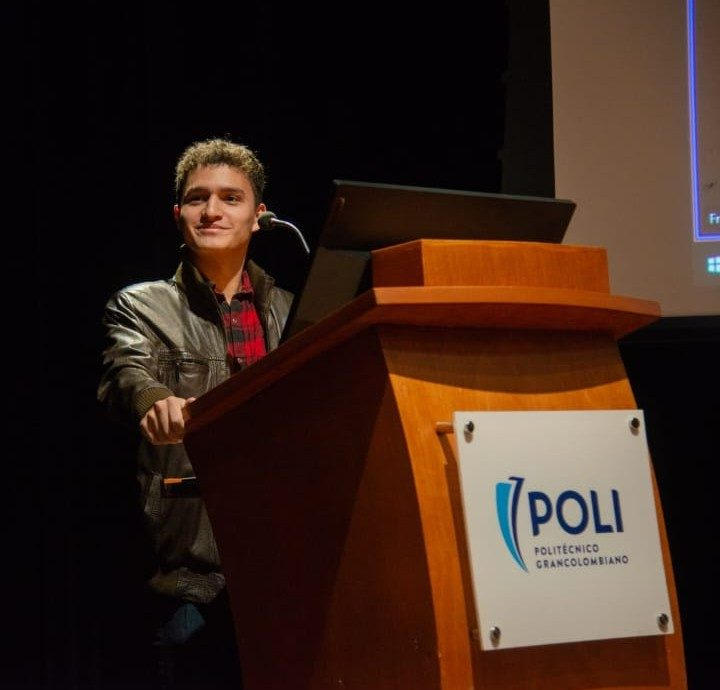

Narrativas digitales
Cómo se construyen relatos de legitimidad y estrategias performativas en las plataformas contemporáneas.
Semillero de investigación Politécnico Grancolombiano
Un espacio de formación e investigación donde estudiamos las dinámicas de los medios contemporáneos, las narrativas digitales y sus implicaciones sociales — con una mirada crítica sobre el activismo digital en contextos de conflicto y resistencia.
Nuestro trabajo se articula alrededor de cuatro ejes que conectan la comunicación digital con el pensamiento crítico y el compromiso social.
Cómo se construyen relatos de legitimidad y estrategias performativas en las plataformas contemporáneas.
Lectura crítica de algoritmos, censura digital y la afectividad como herramienta política.
Reflexión transdisciplinar sobre el papel del periodismo en situaciones de guerra y ocupación.
Análisis del discurso, análisis visual y orientación etnográfica aplicados al contenido digital.
Investigadores y estudiantes que dan vida al semillero desde distintas disciplinas.

Docente e investigadora del Politécnico Grancolombiano. Doctora en Ciencias de la Educación. Lidera el Semillero de Comunicación y Prácticas Digitales y es una afortunada de trabajar en equipo con sus estudiantes. Su trayectoria se destaca por el análisis de medios, los estudios de género y, sobre todo, por un compromiso con la formación y el desarrollo del pensamiento académico.

Estudiante de quinto semestre de Comunicación Social y Periodismo, y de Negocios Internacionales. Investiga temas de periodismo aplicando habilidades narrativas, ética profesional y análisis cualitativo y cuantitativo.

Estudiante de quinto semestre de Comunicación Social y Periodismo, además de Mercadeo y Publicidad. Aborda temáticas de conflicto internacional, con habilidades en análisis de audiencia y del discurso.

Estudiante de quinto semestre de Comunicación Social y Periodismo, así como de Derecho. Investiga temas relacionados con el periodismo, aplicando habilidades narrativas, ética profesional y análisis cualitativo y cuantitativo.

Estudiante de octavo semestre de Ingeniería en Ciencia de Datos. Brinda soporte al semillero en temas de visualización de datos y codificación de los mismos.
Buscamos estudiantes curiosos de cualquier disciplina con ganas de pensar críticamente la comunicación digital.
Somos diferentes, somos Poli.